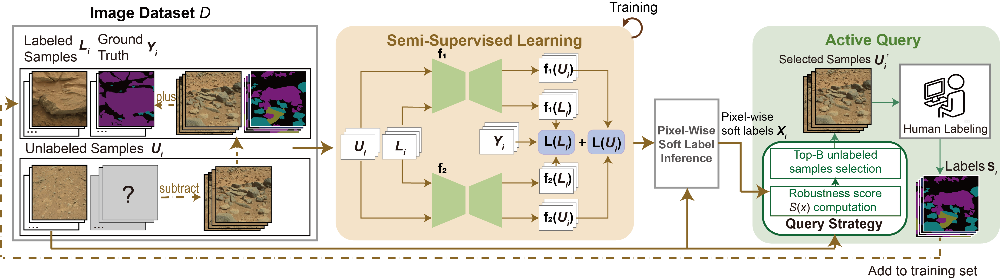
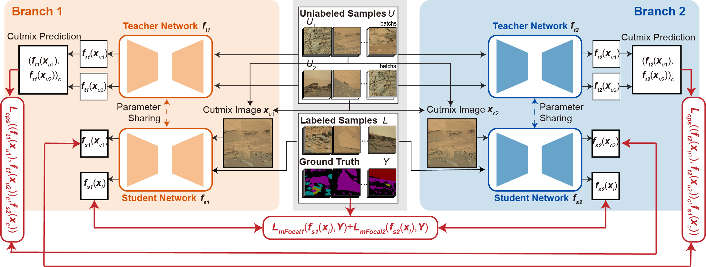
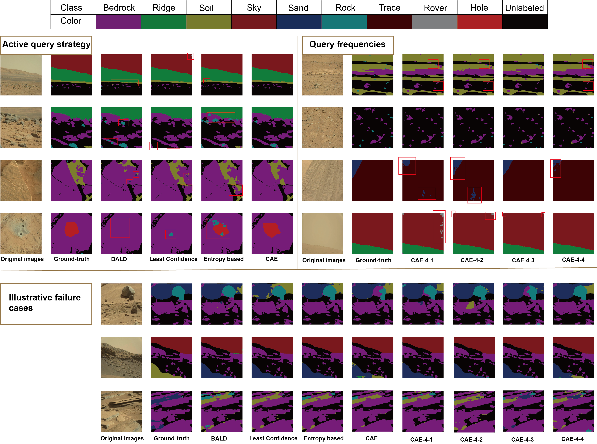

Accurate, large-scale Martian segmentation datasets are a cornerstone of autonomous scene understanding in support of exploration and navigation in Martian environments. However, high-quality segmentation labeling on planetary images requires annotators to have professional extraterrestrial geological knowl- edge, and even skilled annotators need a long time to label a single image in detail. In this paper, we propose a semi- automatic annotation method for Martian scene segmentation. By integrating a semi-supervised segmentation network architecture with an active learning strategy, our framework achieves near- fully supervised performance using a minimal amount of manual annotations, significantly reducing dependence on human experts. Experiments on the S5Mars dataset show that our framework reaches 77.01% mIoU with only 3.12% of the manual annotations (169 images), corresponding to 92.23% of the performance (83.50% mIoU) of the official fully supervised model trained on 5400 labeled images. We also conducted an extended exper- iment on AI4Mars, where the proposed framework consistently achieved strong performance, exceeding the fully supervised baseline by 8.12% using only 3.12% of labeled data. This annotation ratio is substantially lower than the nearly 20% labeled data typically required by conventional semi-supervised approaches, highlighting the efficiency of our method for large- scale Martian scene annotation.

The overall framework of the semi-supervised active learning for Mars segmentation labeling is shown as follows. The framework has two main modules and works in a cyclic iterative manner. The semi-supervised learning architecture trains the segmentation model to automatic segment unlabeled Mars images in the dataset, while the active learning modules strategically queries unlabeled samples most worthy of manual labeling based on their pixel-wise soft pseudo-labels of the trained segmentation model. These newly labeled data are then returned to update the training set for new round of semi-supervised learning.

The segmentation model is established based on classic CPS in dual-branch structure. These two branches are exact the same in structure but different in parameters, introducing perturbations to the model at the network level. Each branch contains a student-teacher network pair. The student network is trained under the strong supervision of the labeled data with their ground-truth labels, as well as the weak supervison of the unlabeled data with their pseudo-labels generated from the teacher network.
| Method | Class IoU (%) | mIoU(%) | |||||||||||
|---|---|---|---|---|---|---|---|---|---|---|---|---|---|
| SSL architecture | Active query strategy | Query frequencies | Labeled | Bedrock | Ridge | Soil | Sky | Sand | Rock | Trace | Rover | Hole | |
| ST | ✗ | - | 169 | 85.48 | 88.37 | 62.62 | 90.82 | 53.93 | 6.96 | 23.52 | 12.58 | 00.00 | 47.14 |
| DMT | ✗ | - | 169 | 85.16 | 91.65 | 65.36 | 94.94 | 56.78 | 12.96 | 44.17 | 1.40 | 18.69 | 52.35 |
| s4GAN | ✗ | - | 169 | 85.21 | 86.25 | 72.27 | 88.73 | 66.07 | 12.52 | 34.13 | 0.05 | 0.00 | 49.47 |
| ReCo | ✗ | - | 169 | 77.88 | 67.18 | 55.15 | 82.03 | 47.10 | 6.05 | 44.34 | 39.13 | 20.45 | 48.51 |
| CPS | ✗ | - | 169 | 85.04 | 89.48 | 63.35 | 93.85 | 49.78 | 5.26 | 62.83 | 20.63 | 28.07 | 55.37 |
| CCT | ✗ | - | 169 | 77.90 | 81.70 | 34.40 | 93.30 | 44.00 | 6.00 | 9.50 | 4.40 | 00.00 | 52.10 |
| Unimatch-v2 | ✗ | - | 169 | 90.60 | 94.37 | 73.78 | 97.21 | 61.81 | 13.24 | 46.43 | 87.89 | 12.53 | 64.19 |
| CPS-Mars | ✗ | - | 169 | 89.92 | 94.09 | 74.42 | 95.56 | 59.44 | 16.16 | 68.11 | 67.14 | 34.13 | 66.55 |
| CPS-Mars | Random | ✗ | 169 | 89.92 | 94.09 | 74.42 | 95.56 | 59.44 | 16.16 | 68.11 | 67.14 | 34.33 | 66.55 |
| CPS-Mars | BALD | ✗ | 169 | 89.09 | 92.59 | 74.90 | 95.08 | 59.64 | 14.80 | 66.21 | 87.45 | 47.11 | 70.76 |
| CPS-Mars | Least Confidence | ✗ | 169 | 87.28 | 92.70 | 71.27 | 96.19 | 71.59 | 11.58 | 77.14 | 84.51 | 48.90 | 71.24 |
| CPS-Mars | Entropy-based | ✗ | 169 | 88.56 | 94.09 | 72.88 | 97.49 | 72.67 | 13.58 | 80.15 | 75.39 | 69.60 | 73.82 |
| CPS-Mars | CAE | ✗ | 169 | 90.27 | 93.34 | 75.60 | 96.87 | 73.90 | 11.63 | 78.16 | 86.82 | 82.10 | 76.52 |
| CPS-Mars | CAE | 1 | 169 | 90.27 | 93.34 | 75.60 | 96.87 | 73.90 | 11.63 | 78.16 | 86.82 | 82.10 | 76.52 |
| CPS-Mars | CAE | 2 | 169 | 90.61 | 95.10 | 75.90 | 97.16 | 69.09 | 11.98 | 79.83 | 89.40 | 81.96 | 76.78 |
| CPS-Mars | CAE | 4 | 169 | 90.76 | 94.54 | 77.94 | 97.27 | 72.31 | 11.02 | 83.46 | 86.32 | 79.47 | 77.01 |
| S5mars | ✗ | ✗ | 5400 | 93.09 | 97.15 | 85.04 | 98.72 | 78.80 | 25.30 | 85.60 | 90.63 | 96.92 | 93.50 |
From left to right, the distribution of each category on the S5Mars dataset is: Bedrock(51.65%), Ridge(15.21%), Soil(12.89%), Sky(10.27%), Sand(5.60%), Rock(3.00%), Trace(0.83%), Rover(0.36%), Hole(0.19%).
| Method | Class IoU (%) | mIoU(%) | ||||
|---|---|---|---|---|---|---|
| Soil | Bedrock | Sand | Big Rock | |||
| AI4Mars | 97.11 | 88.44 | 92.13 | 18.84 | 74.13 | |
| 97.63 | 91.83 | 96.24 | 43.30 | 82.25 | ||
The Class IoU and mIoU results of the baseline method are derived from the confusion matrix reported in the original AI4Mars paper.

(1)We compared the visualization results of four active learning query methods in the experiment. It can be seen that all four methods handle the distant view quite well, but our method is more precise in the details. Moreover, our method also performs very well in recognizing close-ups, especially accurately identifying the 'hole' category.
(2)We compare the qualitative results obtained from four query iterations. The corresponding mIoU values across the four queries show only marginal differences, and the visual results are largely similar. Improvements are mainly reflected in finer details rather than substantial overall changes.
(3)We further conduct an analysis of illustrative failure cases. Overall, we observe that the models struggle to reliably determine the presence of the rock class, and also perform poorly in distinguishing between the soil and sand classes. This reflects a consistent limitation across different cases.